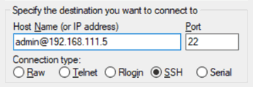

要求變更文件
要求變更文件 編輯此頁面
編輯此頁面 瞭解如何作出貢獻
瞭解如何作出貢獻連線 Cloud Volumes ONTAP 至
貢獻者
如果您需要執行 Cloud Volumes ONTAP 進階的支援管理功能、可以使用 OnCommand 支援功能的支援中心或命令列介面來執行。
連線OnCommand 到《系統管理程式》
您可能需要使用Cloud Volumes ONTAP 以瀏覽器為基礎的管理工具、在整個作業系統上執行某些功能不全的功能。OnCommand Cloud Volumes ONTAP例如、如果您想要建立 LUN 、則需要使用 System Manager 。
您要從其中存取 Cloud Manager 的電腦、必須有連至 Cloud Volumes ONTAP NetApp 的網路連線。例如、您可能需要從 AWS 或 Azure 的跨接主機登入 Cloud Manager 。

|
當部署於多個 AWS 可用性區域時、 Cloud Volumes ONTAP 使用浮動 IP 位址進行叢集管理介面、這表示外部路由無法使用。您必須從屬於同一個路由網域的主機連線。 |
-
在「工作環境」頁面中、按兩下Cloud Volumes ONTAP 您要使用System Manager管理的「功能完善」系統。
-
按一下功能表圖示、然後按一下 * 進階 > 系統管理員 * 。
-
按一下 * 「 Launch * 」。
系統管理程式會載入新的瀏覽器索引標籤。
-
在登入畫面的「使用者名稱」欄位中輸入 * admin* 、輸入您在建立工作環境時所指定的密碼、然後按一下 * 登入 * 。
系統管理程式主控台會載入。您現在可以使用它來管理 Cloud Volumes ONTAP 功能。
連線 Cloud Volumes ONTAP 至 CLI
利用此功能、您可以執行所有的管理命令、這是進階工作或使用 CLI 時的最佳選擇。 Cloud Volumes ONTAP您可以使用 Secure Shell （ SSH ）連線至 CLI 。
您使用 SSH 連線 Cloud Volumes ONTAP 到 Suse 的主機必須有連至 Cloud Volumes ONTAP Suse 的網路連線。例如、您可能需要從 AWS 或 Azure 中的跨接主機使用 SSH 。
|
|
當部署於多個 AZs 時 Cloud Volumes ONTAP 、使用浮動 IP 位址進行叢集管理介面、這表示外部路由無法使用。您必須從屬於同一個路由網域的主機連線。 |
-
在 Cloud Manager 中、識別叢集管理介面的 IP 位址：
-
在「工作環境」頁面上、選取Cloud Volumes ONTAP 「不適用系統」。
-
複製右窗格中顯示的叢集管理 IP 位址。
-
-
使用 SSH 連線至使用管理帳戶的叢集管理介面 IP 位址。
-
範例 *
下圖顯示使用 Putty 的範例：

-
-
在登入提示下、輸入 admin 帳戶的密碼。
-
範例 *
Password: ******** COT2::>
-